import numpy as np
import perceval as pcvlSolution Challenge 1: Introduction to the dual-rail or path encoding
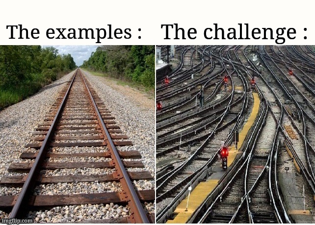
1 Encoding Qubits?
The quantum information carried by a qubit can be represented in various ways. Here, we use the photonic quantum computer model, which operates with photons and optical hardware.
This is how the French startup Quandela operates. We will complete all the challenges of this edition using their framework: Perceval. (https://perceval.quandela.net/)
# A beautiful gate
x_gate = pcvl.PERM([1, 0])
pcvl.pdisplay(x_gate)Working with photons has many advantages. All operations are possible, with direct applications in telecommunications. Scaling is easier and energy consumption is lower.
# Another beautiful gate
hadamard_gate = pcvl.BS.H()
pcvl.pdisplay(hadamard_gate)
There are several ways to encode qubits with photons; we have chosen to focus on dual-rail encoding because it is easier to grasp.
qubits = {
"0": pcvl.BasicState([1, 0]),
"1": pcvl.BasicState([0, 1])
}
print("Le qbit 0 sur le premier rail :", qubits["0"])
print("Le qbit 1 sur le second rail :", qubits["1"])Le qbit 0 sur le premier rail : |1,0>
Le qbit 1 sur le second rail : |0,1>We can then perform operations on these rails to simulate logic gates. For example, a NOT gate (x_gate):
# We create a simulation of our circuit: `x_gate`
p = pcvl.Processor("Naive", x_gate)
# We analyze the output produced with a qubit 0 at the input.
analyser = pcvl.algorithm.Analyzer(p, [qubits["0"]], '*')
pcvl.pdisplay(analyser)| |0,1> | |1,0> | |
|---|---|---|
| |1,0> | 1 | 0 |
We can also try with multiple inputs:
# Dictionary (inverse of qubit defined above) used to directly display qubits when using functions like
# the analyzer.
qubits_ = {qubits[k]: k for k in qubits}
# The '*' in the previous definition of the analyzer was used to display all possible outputs. Here,
# I specified which outputs I wanted to have them in the order I desire.
analyser = pcvl.algorithm.Analyzer(
p,
input_states=list(qubits.values()),
output_states=list(qubits.values()),
mapping=qubits_
)
pcvl.pdisplay(analyser)| 0 | 1 | |
|---|---|---|
| 0 | 0 | 1 |
| 1 | 1 | 0 |
All operations can be represented by unitary matrices. For example, the previous circuit can be summarized by:
pcvl.pdisplay(x_gate.definition())\(\displaystyle \left[\begin{matrix}0 & 1\\1 & 0\end{matrix}\right]\)
In general: \[ |\phi\rangle = U|\psi\rangle \]
For instance: \[ |\phi\rangle = X|1\rangle = \begin{pmatrix} 0 & 1 \\ 1 & 0 \end{pmatrix} \begin{pmatrix} 0 \\ 1 \end{pmatrix} = \begin{pmatrix} 1 \\ 0 \end{pmatrix} = |0\rangle \]
The concatenation of circuits translates to a simple matrix multiplication:
super_circuit = x_gate // x_gate
pcvl.pdisplay(super_circuit.compute_unitary()) # On ne peut plus faire appel directement à .definition()\(\displaystyle \left[\begin{matrix}1 & 0\\0 & 1\end{matrix}\right]\)
We can try with the analyzer:
p = pcvl.Processor("Naive", super_circuit)
analyser = pcvl.algorithm.Analyzer(
p,
input_states=list(qubits.values()),
output_states=list(qubits.values()),
mapping=qubits_
)
pcvl.pdisplay(analyser)| 0 | 1 | |
|---|---|---|
| 0 | 1 | 0 |
| 1 | 0 | 1 |
Without the mapping:
analyser = pcvl.algorithm.Analyzer(
p,
input_states=list(qubits.values()),
output_states=list(qubits.values())
)
pcvl.pdisplay(analyser)| |1,0> | |0,1> | |
|---|---|---|
| |1,0> | 1 | 0 |
| |0,1> | 0 | 1 |
Or even observe our magnificent super circuit that serves no purpose:
pcvl.pdisplay(super_circuit)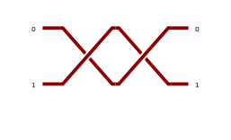
2 The Beginning of Problems…
NOT gates are all well and good, but we won’t get much done with just those. So, what happens if we try with another gate?
p = pcvl.Processor("Naive", hadamard_gate)
analyser = pcvl.algorithm.Analyzer(
p,
input_states=[qubits["0"]],
output_states=list(qubits.values()),
mapping=qubits_
)
pcvl.pdisplay(analyser)| 0 | 1 | |
|---|---|---|
| 0 | 1/2 | 1/2 |
What happened? We used the superstar of quantum gates: the Hadamard gate. It’s the gateway to the quantum world, allowing a qubit to be prepared in a superposed state, as shown here:
\[ H = \frac{1}{\sqrt{2}} \begin{pmatrix} 1 & 1 \\ 1 & -1 \end{pmatrix} \]
If we add a \(0\) at the input: \[ |\phi\rangle = H|0\rangle = \frac{1}{\sqrt{2}} \begin{pmatrix} 1 & 1 \\ 1 & -1 \end{pmatrix} \begin{pmatrix} 1 \\ 0 \end{pmatrix} = \frac{1}{\sqrt{2}} \begin{pmatrix} 1 \\ 1 \end{pmatrix} \]
With: \[ \frac{1}{\sqrt{2}} \begin{pmatrix} 1 \\ 1 \end{pmatrix} = \frac{1}{\sqrt{2}} \begin{pmatrix} 1 \\ 0 \end{pmatrix} + \frac{1}{\sqrt{2}} \begin{pmatrix} 0 \\ 1 \end{pmatrix} = \frac{1}{\sqrt{2}} |0\rangle + \frac{1}{\sqrt{2}}|1\rangle \]
We can create a Hadamard gate with a semi-reflective mirror!
In practice, it will be a bit different though…
pcvl.pdisplay(hadamard_gate)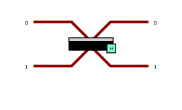
You may have noticed that the output from the analyzer is not the same as that of the equations. Indeed, \(|\phi\rangle\) is a quantum state, which can be complex: \(|\phi\rangle = \frac{i}{\sqrt{2}} |0\rangle - \frac{i}{\sqrt{2}} |1\rangle\), whereas the probabilities of observing one state over another are real! To convert to probabilities, we simply square the amplitudes. For instance, in the previous example: \(\Pr(|0\rangle) = \left|\frac{1}{\sqrt{2}}\right|^2 = \frac{1}{2}\). This matches the output of our analyzer.
To obtain the complex amplitudes, we can use a backend:
backend = pcvl.BackendFactory.get_backend("Naive")
backend.set_circuit(hadamard_gate)
backend.set_input_state(qubits["0"])
ampl0, ampl1 = backend.prob_amplitude(qubits["0"]), backend.prob_amplitude(qubits["1"])
print(f"|phi> = {ampl0} |0> + {ampl1} |1>")|phi> = (0.7071067811865476+0j) |0> + (0.7071067811865475+0j) |1>We indeed find the result of the equations: \[ |\phi\rangle = \frac{1}{\sqrt{2}} |0\rangle + \frac{1}{\sqrt{2}} |1\rangle \]
This series of challenges is not intended to delve into theoretical details but to explore the ecosystem of quantum computers through practice. If you want to learn more, you can checkout IBM’s quantum courses: https://learning.quantum.ibm.com/, which are a very good starting point.
3 A New Challenger: The Phase Shifter
In addition to having complex amplitudes, we can manipulate them using a very powerful tool: the phase shifter. It applies to one rail and performs the operation: \(e^{i\theta}\).
phase_shifter = pcvl.PS(np.pi/3)
pcvl.pdisplay(phase_shifter)In a circuit, it looks like this:
circuit_ps = pcvl.Circuit(2) // (0, phase_shifter) # Le 0 correspond au numéro du rail où est positionné
# notre composant
pcvl.pdisplay(circuit_ps)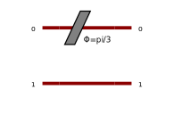
With its associated unitary matrix:
pcvl.pdisplay(circuit_ps.compute_unitary())\(\displaystyle \left[\begin{matrix}\frac{1}{2} + \frac{\sqrt{3} i}{2} & 0\\0 & 1\end{matrix}\right]\)
It is also possible to directly observe the amplitudes:
backend_ps = pcvl.BackendFactory.get_backend("Naive")
backend_ps.set_circuit(circuit_ps)
backend_ps.set_input_state(qubits["0"])
ampl0, ampl1 = backend_ps.prob_amplitude(qubits["0"]), backend_ps.prob_amplitude(qubits["1"])
print(f"|phi> = {ampl0} |0> + {ampl1} |1>")|phi> = (0.5000000000000001+0.8660254037844386j) |0> + 0j |1>We can have fun reproducing known gates, like the NOT gate:
super_not = hadamard_gate // (1, pcvl.PS(np.pi)) // hadamard_gate
pcvl.pdisplay(super_not)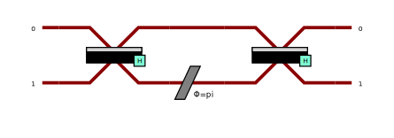
p = pcvl.Processor("Naive", super_not)
analyser = pcvl.algorithm.Analyzer(
p,
input_states=list(qubits.values()),
output_states=list(qubits.values()),
mapping=qubits_
)
pcvl.pdisplay(analyser)| 0 | 1 | |
|---|---|---|
| 0 | 0 | 1 |
| 1 | 1 | 0 |
What happened? In the canonical basis \(\left(|0\rangle = \begin{pmatrix} 1 \\ 0 \end{pmatrix}, |1\rangle = \begin{pmatrix} 0 \\ 1 \end{pmatrix}\right)\), applying a phase shift on one of the two rails would not have changed anything. However, in another basis: \[ H|0\rangle = H \begin{pmatrix} 1 \\ 0 \end{pmatrix} = \frac{1}{\sqrt{2}} \begin{pmatrix} 1 \\ 1 \end{pmatrix} = |+\rangle \]
\[ H|1\rangle = H \begin{pmatrix} 0 \\ 1 \end{pmatrix} = \frac{1}{\sqrt{2}} \begin{pmatrix} 1 \\ -1 \end{pmatrix} = |-\rangle \]
We notice that “0” and “1” differ only by a phase shift, here a shift of \(e^{i\pi}\) on the second rail. So, we simply switch to the new basis, phase shift the second rail, and return to the canonical basis (\(H\) is its own inverse, so it’s easy).
4 Your Turn to Play!
For this part, we will use the generalization of the Hadamard gate: a Beam Splitter. Here are its parameters:
# On peut définir des variables symboliques :
symbolic_alpha = pcvl.P('α')
simple_bs = pcvl.BS(theta=symbolic_alpha)
pcvl.pdisplay(simple_bs.U)\(\displaystyle \left[\begin{matrix}\cos{\left(\frac{α}{2} \right)} & i \sin{\left(\frac{α}{2} \right)}\\i \sin{\left(\frac{α}{2} \right)} & \cos{\left(\frac{α}{2} \right)}\end{matrix}\right]\)
# Puis leur assigner une valeur :
simple_bs.assign({'α': np.pi/2})
pcvl.pdisplay(simple_bs.compute_unitary())\(\displaystyle \left[\begin{matrix}\frac{\sqrt{2}}{2} & \frac{\sqrt{2} i}{2}\\\frac{\sqrt{2} i}{2} & \frac{\sqrt{2}}{2}\end{matrix}\right]\)
# Ou changer ensuite de valeur :
symbolic_alpha.set_value(np.pi)
pcvl.pdisplay(simple_bs.compute_unitary())\(\displaystyle \left[\begin{matrix}0 & i\\i & 0\end{matrix}\right]\)
4.1 Step 1
Considering the following circuit (which corresponds to the definition of the Beam Splitter above):
step_one = simple_bs
pcvl.pdisplay(step_one)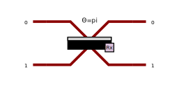
And an input value: \(|0\rangle\),
What value of \(\alpha\) should be chosen to have a 0.9 probability of getting \(|1\rangle\)?
Solution Step 1:
We can try to calculate the state \(|\psi\rangle\) at the output of the beam splitter: \[ |\psi\rangle = \begin{pmatrix} \cos{\frac{\alpha}{2}} & i\sin{\frac{\alpha}{2}} \\ i\sin{\frac{\alpha}{2}} & \cos{\frac{\alpha}{2}} \end{pmatrix} \begin{pmatrix} 1 \\ 0 \end{pmatrix} = \cos{\frac{\alpha}{2}}|0\rangle + i\sin{\frac{\alpha}{2}}|1\rangle \] We want a probability of 0.9 for having \(|1\rangle\) and thus a probability of 0.1 for having \(|0\rangle\): \[ \Pr(|0\rangle) = \left|\cos{\frac{\alpha}{2}}\right|^2 = \frac{1}{10} \] \[ \cos{\frac{\alpha}{2}} = \pm \frac{1}{10} \]
Hence the solutions: \[ 2\arccos\left(\frac{1}{10}\right), 2\arccos\left(-\frac{1}{10}\right), -2\arccos\left(\frac{1}{10}\right), -2\arccos\left(-\frac{1}{10}\right) \]
We could also use the pre-built Perceval function: pcvl.BS.r_to_theta().
alpha = pcvl.BS.r_to_theta(0.1)
np.round(alpha, 2)2.5# Other solutions:
for a in [2*np.arccos(1/np.sqrt(10)), 2*np.arccos(-1/np.sqrt(10)), -2*np.arccos(1/np.sqrt(10)), -2*np.arccos(-1/np.sqrt(10))]:
print(f"Probabilité d'avoir |0> avec alpha = {np.round(a, 2)} : {np.round((np.cos(a/2))**2, 2)}")step_one.assign({'α': alpha})
pcvl.pdisplay(step_one)p_step_one = pcvl.Processor("Naive", step_one)
a_step_one = pcvl.algorithm.Analyzer(
p_step_one,
input_states=[qubits["0"]],
output_states=list(qubits.values()),
mapping=qubits_
)
print("Expected output: 1/10 for 0 and 9/10 for 1")
pcvl.pdisplay(a_step_one)
assert np.isclose(a_step_one.distribution[0][1].real, 0.9) 4.2 Step 2
Considering the following circuit and an input value of \(|0\rangle\), find the values of \(\beta\) and \(\gamma\) to prepare a qubit in the state: \[ |\psi\rangle = \frac{\sqrt{3}}{2} |0\rangle + \left(\frac{\sqrt{3}}{4} - \frac{i}{4} \right)|1\rangle \]
symbolic_beta = pcvl.P("β")
symbolic_gamma = pcvl.P("γ")
step_two = pcvl.BS(theta=symbolic_beta) // (1, pcvl.PS(phi=symbolic_gamma))
pcvl.pdisplay(step_two)
pcvl.pdisplay(step_two.U)\(\displaystyle \left[\begin{matrix}\cos{\left(\frac{β}{2} \right)} & i \sin{\left(\frac{β}{2} \right)}\\i e^{i γ} \sin{\left(\frac{β}{2} \right)} & e^{i γ} \cos{\left(\frac{β}{2} \right)}\end{matrix}\right]\)
Solution Step 2:
It is sufficient to solve the system of unknowns \((\beta, \gamma)\): \[ \begin{pmatrix} \cos{\frac{\beta}{2}} & i\sin{\frac{\beta}{2}} \\ i e^{i\gamma}\sin{\frac{\beta}{2}} & e^{i\gamma}\cos{\frac{\beta}{2}} \end{pmatrix} \begin{pmatrix} 1 \\ 0 \end{pmatrix} = \begin{pmatrix} \frac{\sqrt{3}}{2} \\ \frac{\sqrt{3}}{4} - \frac{i}{4} \end{pmatrix} \] \[ \begin{cases} \cos{\frac{\beta}{2}} = \frac{\sqrt{3}}{2} \Longrightarrow \beta = \pm\frac{\pi}{3} \\ i e^{i\gamma}\sin{\frac{\beta}{2}} = \frac{\sqrt{3}}{4} - \frac{i}{4} \end{cases} \] In the case \(\beta = \frac{\pi}{3}\) : \[ i e^{i\gamma}\sin{\frac{\beta}{2}} = \frac{\sqrt{3}}{4} - \frac{i}{4} \] \[ i e^{i\gamma} = \frac{\sqrt{3}}{2} - \frac{i}{2} \] \[ e^{i\gamma} = - \frac{1}{2} -i\frac{\sqrt{3}}{2} \Longrightarrow \gamma = -\frac{2\pi}{3} \] In the case \(\beta = -\frac{\pi}{3}\), we find the same equations, \(\gamma = \frac{\pi}{3}\). Hence the solution: \[ \beta = \frac{\pi}{3}, \gamma = -\frac{2\pi}{3} \quad\text{ou}\quad \beta = -\frac{\pi}{3}, \gamma = \frac{\pi}{3} \]
beta = - np.pi / 3
gamma = np.pi / 3step_two.assign({"β": beta, "γ": gamma})
b_step_two = pcvl.BackendFactory.get_backend("Naive")
b_step_two.set_circuit(step_two)
b_step_two.set_input_state(qubits["0"])
ampl0, ampl1 = b_step_two.prob_amplitude(qubits["0"]), b_step_two.prob_amplitude(qubits["1"])
res = f"|φ> = {np.round(ampl0, 2)} |0> + {np.round(ampl1, 2)} |1>"
sol = f"|φ> = {np.round(np.sqrt(3) / 2 + 0j, 2)} |0> + {np.round(np.sqrt(3) / 4 - 1j / 4, 2)} |1>"
print(f"Résultat : {res}")
print(f"Solution : {sol}")
# We ensure that the answer is indeed equal to the solution:
assert res == solRésultat : |φ> = (0.87+0j) |0> + (0.43-0.25j) |1>
Solution : |φ> = (0.87+0j) |0> + (0.43-0.25j) |1>4.3 One Last Tool for the Road: The Bloch Sphere
It turns out that the previous two results can be generalized. With the following circuit, it is possible to prepare any state. (https://perceval.quandela.net/docs/components.html#beam-splitter)
super_preparator = pcvl.BS()
pcvl.pdisplay(super_preparator)The definition is actually much more general than what we used previously:
pcvl.pdisplay(super_preparator.definition())\(\displaystyle \left[\begin{matrix}e^{i \left(\phi_{tl} + \phi_{tr}\right)} \cos{\left(\frac{\theta}{2} \right)} & i e^{i \left(\phi_{bl} + \phi_{tr}\right)} \sin{\left(\frac{\theta}{2} \right)}\\i e^{i \left(\phi_{br} + \phi_{tl}\right)} \sin{\left(\frac{\theta}{2} \right)} & e^{i \left(\phi_{bl} + \phi_{br}\right)} \cos{\left(\frac{\theta}{2} \right)}\end{matrix}\right]\)
For example, with random values:
import random
phi_tl, phi_tr, phi_bl, phi_br, theta_ = [round(random.uniform(0, np.pi), 2) for _ in range(5)]
super_preparator = pcvl.BS(phi_tl=phi_tl, phi_tr=phi_tr, phi_bl=phi_bl, phi_br=phi_br, theta=theta_)
pcvl.pdisplay(super_preparator.U)\(\displaystyle \left[\begin{matrix}0.395516415802851 - 0.308985935727611 i & 0.864924537952878 i e^{4.27 i}\\0.864924537952878 i e^{3.58 i} & -0.307408689052989 + 0.396743546313892 i\end{matrix}\right]\)
Which allows us to prepare:
backend = pcvl.BackendFactory.get_backend("Naive")
backend.set_circuit(super_preparator)
backend.set_input_state(qubits["0"])
ampl0, ampl1 = backend.prob_amplitude(qubits["0"]), backend.prob_amplitude(qubits["1"])
print(f"|φ> = {np.round(ampl0, 2)} |0> + {np.round(ampl1, 2)} |1>")|φ> = (0.4-0.31j) |0> + (0.37-0.78j) |1>To represent a qubit, it is possible to use the Bloch sphere.

The \(Z\) axis corresponds to the states \(|0\rangle\) and \(|1\rangle\), the \(X\) axis corresponds to the states \(|+\rangle\) and \(|-\rangle\) encountered earlier, and the \(Y\) axis corresponds to the states \(|i\rangle\) and \(|-i\rangle\).
We can easily visualize a state with the Qiskit library:
from qiskit.visualization import plot_bloch_multivector
from qiskit.quantum_info import Statevector
state_vector = Statevector([ampl0, ampl1]) # Not to be confused with StateVector from Perceval
plot_bloch_multivector(state_vector)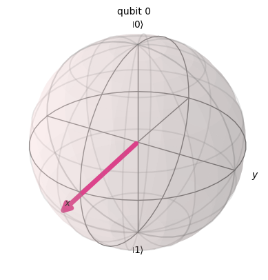
A simple \(|0\rangle\) :
plot_bloch_multivector(np.array(qubits["0"])) # Same as `plot_bloch_multivector([1, 0])`
A small utility for the next part:
def circuit_to_state_vector(circuit):
backend = pcvl.BackendFactory.get_backend("Naive")
backend.set_circuit(circuit)
backend.set_input_state(qubits["0"])
ampl0, ampl1 = backend.prob_amplitude(qubits["0"]), backend.prob_amplitude(qubits["1"])
return Statevector([ampl0, ampl1])
plot_bloch = lambda circuit: plot_bloch_multivector(circuit_to_state_vector(circuit))Our state \(|+\rangle\), created by applying a Hadamard gate to \(|0\rangle\) \(\left(|+\rangle = H|0\rangle\right)\):
plot_bloch(hadamard_gate)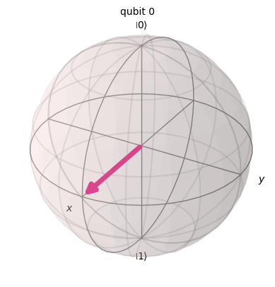
Given that measurement is a projection, in our case, onto the basis \(\left\{|0\rangle, |1\rangle\right\}\), it is easier to see with this representation that the state \(|+\rangle\), when measured, is equally likely to yield \(0\) as it is to yield \(1\). It is also straightforward to see that the global phase (a rotation around the \(Z\) axis) will have no effect on the measurement. This is reflected in the calculation, for \(|\psi\rangle = e^{i\theta} \alpha |0\rangle + e^{i\theta} \beta |1\rangle\): \[ \Pr(0) = \left|e^{i\theta}\alpha\right|^2 = |\alpha|^2 \] \[ \Pr(1) = \left|e^{i\theta}\beta\right|^2 = |\beta|^2 \]
Furthermore, we can also understand why the NOT gate is called an \(X\) gate: A rotation of \(\pi\) around the \(X\) axis changes the state \(|0\rangle\) to \(|1\rangle\), and vice versa.
4.4 Final Step:
Again, a few utility functions. As their names indicate, these functions allow rotations around the different axes with a chosen angle. To combine them, simply use the // operator.
(PS: Remember the right-hand rule :)
x_rot = lambda x: pcvl.Circuit(2) // (0, pcvl.PS(np.pi)) // pcvl.BS.Rx(theta=x) // (0, pcvl.PS(np.pi))
y_rot = lambda x: pcvl.BS.Ry(theta=x)
z_rot = lambda x: pcvl.BS.H() // x_rot(x) // pcvl.BS.H() Moving around the sphere then becomes trivial!
# (All paths start from |0> with the functions I've written)
the_way = x_rot(-np.pi/4) // z_rot(-np.pi/4)
plot_bloch(the_way)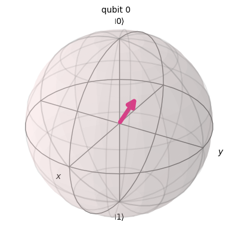
pcvl.pdisplay(the_way)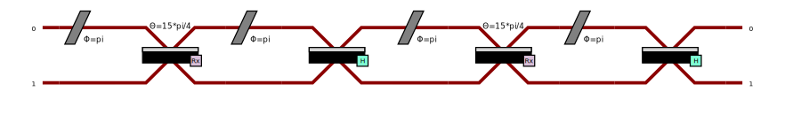
Perform the following path:
Starting point: \[ |\phi_{start}\rangle = \frac{\sqrt{2+\sqrt{2}}}{2} |0\rangle + \frac{\sqrt{2-\sqrt{2}}}{2} e^{-i\frac{\pi}{4}} |1\rangle \]
Step: \[ |\phi_{step}\rangle = |-\rangle \]
Endpoint: \[ |\phi_{finish}\rangle = \frac{\sqrt{2-\sqrt{2}}}{2} |0\rangle + \frac{\sqrt{2+\sqrt{2}}}{2} e^{i\frac{\pi}{4}} |1\rangle \]
Coordinates of the starting point:
start_state = np.array([np.sqrt(2+np.sqrt(2))/2, np.sqrt(2-np.sqrt(2))/2 * (np.sqrt(2)/2 - 1j * np.sqrt(2)/2)])
plot_bloch_multivector(start_state)
Coordinates of the step:
step_state = np.array([np.sqrt(2)/2, -np.sqrt(2)/2])
plot_bloch_multivector(step_state)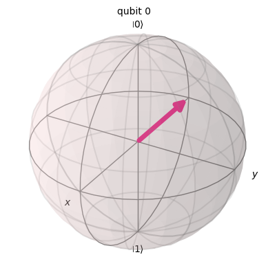
Coordinates of the end:
finish_state = np.array([np.sqrt(2-np.sqrt(2))/2, np.sqrt(2+np.sqrt(2))/2 * (np.sqrt(2)/2 + 1j * np.sqrt(2)/2)])
plot_bloch_multivector(finish_state)
# print(finish_state)
Solution final step:
There are many possible ways, here is one:
Start:
plot_bloch(y_rot(np.pi/4) // z_rot(-np.pi/4))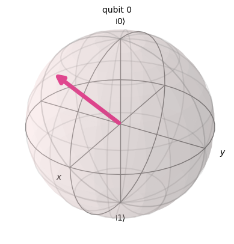
First rotation of \(-\frac{3\pi}{4}\) around the Z-axis. The direction is important and can be determined using the right-hand rule.
plot_bloch(y_rot(np.pi/4) // z_rot(-np.pi/4) // z_rot(-3*np.pi/4))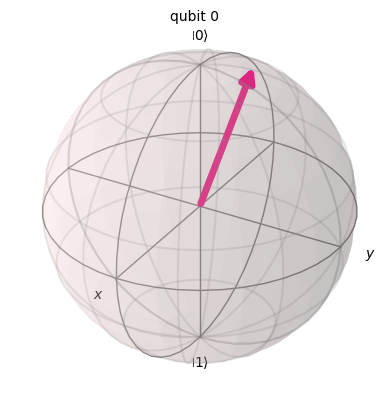
Second rotation of \(-\frac{\pi}{4}\) around the Y-axis.
plot_bloch(y_rot(np.pi/4) // z_rot(-np.pi/4) // z_rot(-3*np.pi/4) // y_rot(-np.pi/4))
Third rotation of \(-\frac{\pi}{4}\) around the Y-axis.
plot_bloch(y_rot(np.pi/4) // z_rot(-np.pi/4) // z_rot(-3*np.pi/4) // y_rot(-np.pi/4) // y_rot(-np.pi/4))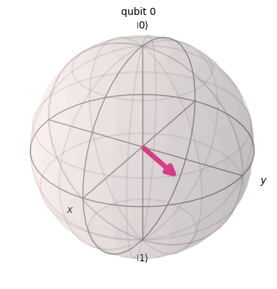
Final rotation of \(-\frac{3\pi}{4}\) around the Z-axis.
plot_bloch(y_rot(np.pi/4) // z_rot(-np.pi/4) // z_rot(-3*np.pi/4) // y_rot(-np.pi/4) // y_rot(-np.pi/4) // z_rot(-3*np.pi/4))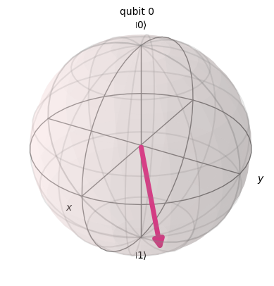
start = y_rot(np.pi/4) // z_rot(-np.pi/4) # To position oneself at the starting point:
delta = -3*np.pi/4
epsilon = -np.pi/4
zeta = -np.pi/4
eta = -3*np.pi/4
# raise NotImplementedError
# Another way to chain the gates
final_step = (start
.add(0, z_rot(delta))
.add(0, y_rot(epsilon)) # Arrived at the Hadamard step
.add(0, y_rot(zeta))
.add(0, z_rot(eta)) # End of the journey!
)
plot_bloch(final_step)
5 Did You Notice?
This is a non-important physical point for the validation of the challenge, I just mention it for those who wonder.
The amplitudes of start and start_state are not the same!
Indeed, this is a point I haven’t addressed: global phases and relative phases. A global phase is a phase of the form \(e^{i\theta}|\phi\rangle\), it doesn’t change anything in our calculations because it doesn’t allow us to distinguish between \(|0\rangle\) and \(|1\rangle\). It is not visible on the Bloch sphere but is in calculating the amplitudes.
On the other hand, the relative phase, a phase of the form \(|\psi\rangle = \alpha|0\rangle +\beta e^{i\theta}|1\rangle\), may have an impact depending on the following calculations (see for example the phase kickback technique, central in Shor’s algorithm). It is visible on the Bloch sphere and in calculating the amplitudes.
So, when I defined:
start_state = np.array([np.sqrt(2+np.sqrt(2))/2, np.sqrt(2-np.sqrt(2))/2 * (np.sqrt(2)/2 - 1j * np.sqrt(2)/2)])The amplitudes are: \(0.92|0\rangle + (0.27 - 0.27i)|1\rangle\). That is: \[ |\phi_{start}\rangle = \frac{\sqrt{2+\sqrt{2}}}{2} |0\rangle + \frac{\sqrt{2-\sqrt{2}}}{2} e^{-i\frac{\pi}{4}} |1\rangle \]
While when I defined:
start = y_rot(np.pi/4) // z_rot(-np.pi/4) The amplitudes are: \((-0.35+0.15i)|0\rangle+ (-0.85-0.35i)|1\rangle\). That is: \[ |\phi_{start}'\rangle = \frac{\sqrt{2+\sqrt{2}}}{2} e^{i\frac{\pi}{8}} |0\rangle + \frac{\sqrt{2-\sqrt{2}}}{2} e^{-i\frac{\pi}{8}} |1\rangle \]
We notice that \(|\phi_{start}\rangle\) and \(|\phi_{start}'\rangle\) differ only by a global phase:
\[ |\phi_{start}'\rangle = e^{i\frac{\pi}{8}} |\phi_{start}\rangle \]
In my example of super_not above, I used a relative phase, whereas when I explained the \(X\) and \(Z\) rotations just before the final step, I was talking about global phase!
6 Flag Retrieval
Run the cell below by providing the URL given in the statement. The tests performed are the same as in this notebook, but there may be issues if you have run the cells multiple times. Feel free to restart the entire notebook at once.
import requests as rq
def circuit_to_list(circuit):
return [[(x.real, x.imag) for x in l] for l in np.array(circuit.compute_unitary())]
d = {
"step_one": circuit_to_list(step_one),
"step_two": circuit_to_list(step_two),
"final_step": circuit_to_list(final_step)
}
URL = ...
# URL = "http://localhost:8000"
# URL = "https://perceval.challenges.404ctf.fr"
rq.get(URL+"/healthcheck").json(){'message': 'Statut : en pleine forme !'}rq.post(f"{URL}/challenges/1", json=d).json(){'message': 'GG ! Voici le drapeau : 404CTF{uN_r4Il_PoUr_2_Tr4iNs_eU_N0n_dEUx_r4ils_PoUR_1tRa1n}'}